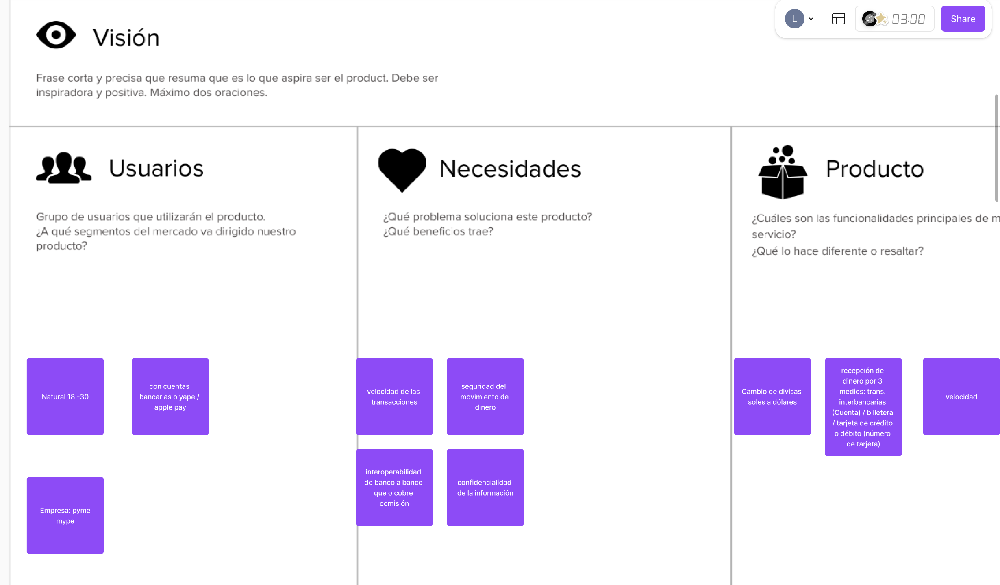
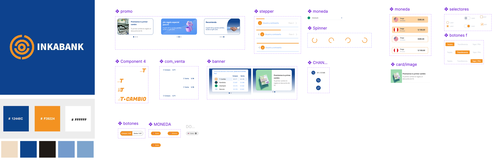
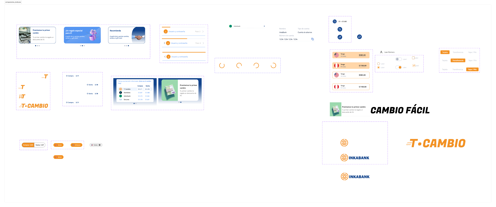

El problema
No existía una solución digital de cambio de divisas para personas naturales (18-30 años, con cuentas bancarias, Yape o Apple Pay) ni para pequeñas empresas (pyme/mype). Lideré el proyecto de punta a punta: research, arquitectura de información y diseño de la experiencia completa.

Research inicial — segmentos de usuario, necesidades clave (velocidad, seguridad, interoperabilidad, confidencialidad) y alcance del producto
UI/UX Designer end-to-end — research y diseño
Cubrí el proceso completo: entrevistas y definición de segmentos, arquitectura de información, UI kit, y validación con usuarios reales antes de cerrar la identidad final del producto.
UI kit completo + una decisión de marca con alternativa descartada
Construí el UI kit desde átomos: paleta basada en el logo, tipografía, botones con estados (default/loading/disabled), inputs, navegación, iconografía y notificaciones — y moléculas: comparador de tasas de cambio, selector de método de pago, indicadores de progreso. Aseguré una experiencia homologada entre app, web mobile y desktop.

UI kit: promo, stepper, selector de moneda, spinner, card/image, banner, botones y selectores — más paleta de marca (#12448C, #F39224)
Antes de cerrar la identidad de marca, exploré dos direcciones distintas — T.Cambio vs. Inkabank — y validé ambas con 5 tests de guerrilla.

Exploración de marca (T.Cambio vs. Inkabank) y moléculas: comparador de tasas, selector de cuenta/método de pago
Demo interactivo — desktop y mobile
El producto final aplicando el UI kit y la identidad de marca elegida, funcionando en los dos canales principales.
Demo desktop — comparador de tasas y flujo de cambio
Demo mobile — registro y flujo de cambio
Validación rápida por diseño, no por defecto
Prioricé velocidad de validación sobre tamaño de muestra: en vez de un estudio cuantitativo extenso, corrí 5 tests de guerrilla — suficientes para detectar problemas críticos de usabilidad y confirmar la dirección de marca en un ciclo corto de iteración, antes de invertir en una validación a mayor escala.
SUS de 85/100 — muy por encima del promedio de industria
El testing arrojó un System Usability Scale de 85/100 (el promedio de industria es 68, según Bangor et al.), confirmando que tanto el flujo como la dirección de marca elegida (Inkabank sobre T.Cambio) resolvían la necesidad de identidad del negocio y se sentían consistentes entre canales.